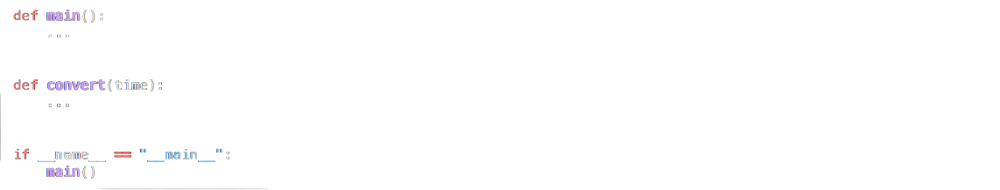

Suppose that you’re in a country where it’s customary to eat breakfast between 7:00 and 8:00, lunch between 12:00 and 13:00, and dinner between 18:00 and 19:00. Wouldn’t it be nice if you had a program that could tell you what to eat when?
In meal.py, implement a program that prompts the user for a time and outputs whether it’s breakfast time, lunch time, or dinner time. If it’s not time for a meal, don’t output anything at all. Assume that the user’s input will be formatted in 24-hour time as #:## or ##:##. And assume that each meal’s time range is inclusive. For instance, whether it’s 7:00, 7:01, 7:59, or 8:00, or anytime in between, it’s time for breakfast.
Structure your program per the below, wherein convert is a function (that can be called by main) that converts time, a str in 24-hour format, to the corresponding number of hours as a float. For instance, given a time like "7:30" (i.e., 7 hours and 30 minutes), convert should return 7.5 (i.e., 7.5 hours).
Demo
Challenge
If up for a challenge, optionally add support for 12-hour times, allowing the user to input times in these formats too:
#:## a.m. and ##:## a.m.
#:## p.m. and ##:## p.m.
How to Test
Here’s how to test your code manually:
Run your program with python meal.py. Type 7:00 and press Enter. Your program should output:
breakfast timeRun your program with python meal.py. Type 7:30 and press Enter. Your program should output:
breakfast timeRun your program with python meal.py. Type 12:42 and press Enter. Your program should output:
lunch timeRun your program with python meal.py. Type 18:32 and press Enter. Your program should output:
dinner timeRun your program with python meal.py. Type 11:11 and press Enter. Your program should output nothing
You can execute the below to check your code using the code below, but be sure to test it yourself as well!
Check/python/week1/mealGreen smilies mean your program has passed a test! Red frownies will indicate your program output something unexpected. Goodluck 😊